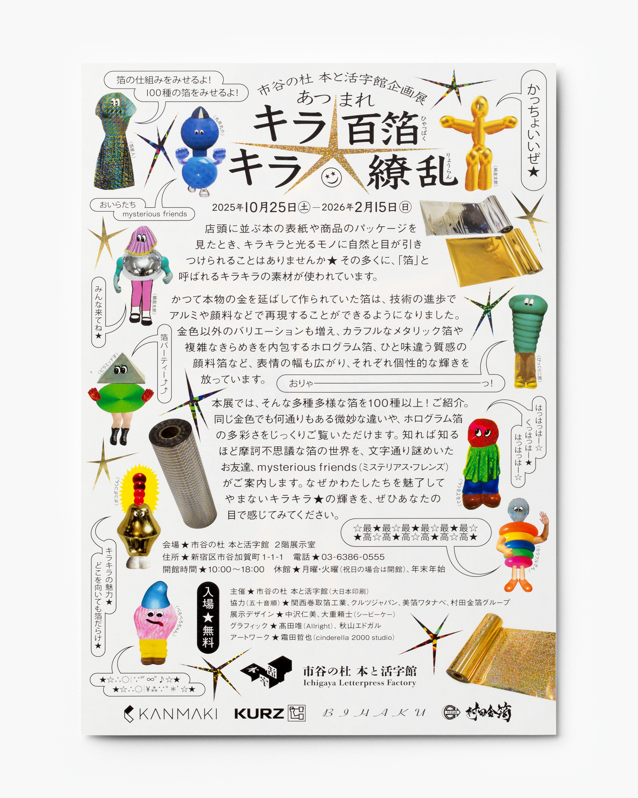
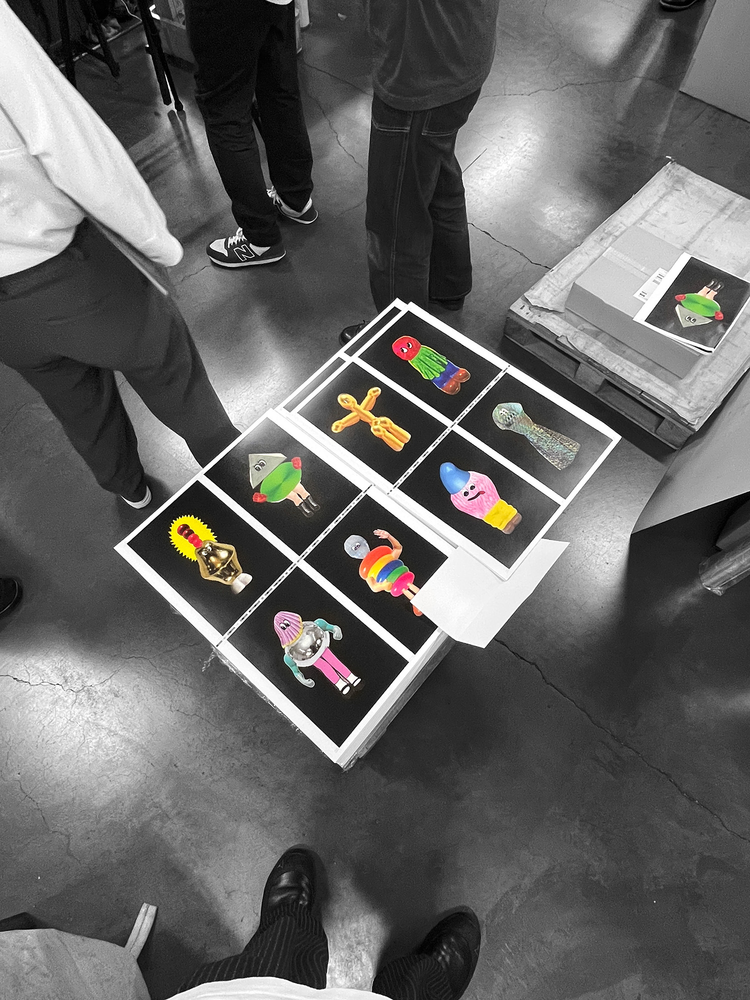

あつまれキラキラ★百箔繚乱 (2025)
Atsumare kirakira ★ Hyappaku Ryouran (2025)
市谷の杜 本と活字館で開催された「あつまれキラキラ★百箔繚乱」のデザインを担当しました。100種類以上の箔が一堂に集まり、箔の仕組みや実例を紹介する展示です。謎の生命体 mysterious friends が会場をご案内しました。
＊
CL. DNP
Venue :
Ichigaya Letterpress Factory Museum
Supported by :
Kansai Makitori Haku Kogyo
KURZ Japan
Bihaku Watanabe
Murata Gold Leaf Group
Exhibition Design :
Hitomi Nakazawa
Yorito Oshige (CBK)
Graphic Design :
Yui Takada (Allright)
Edgar Akiyama
Artwork :
Tetsuya Shimoda (cinderella 2000 studio)